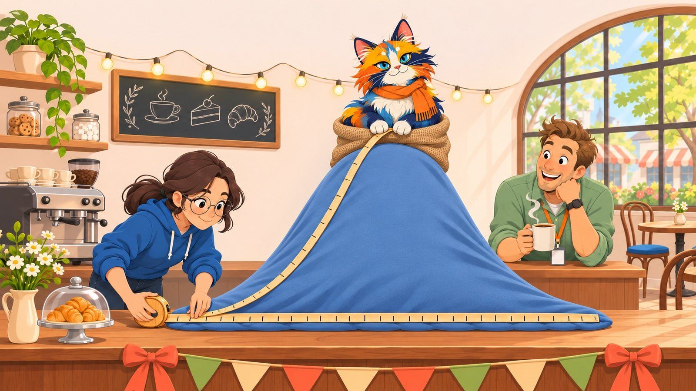
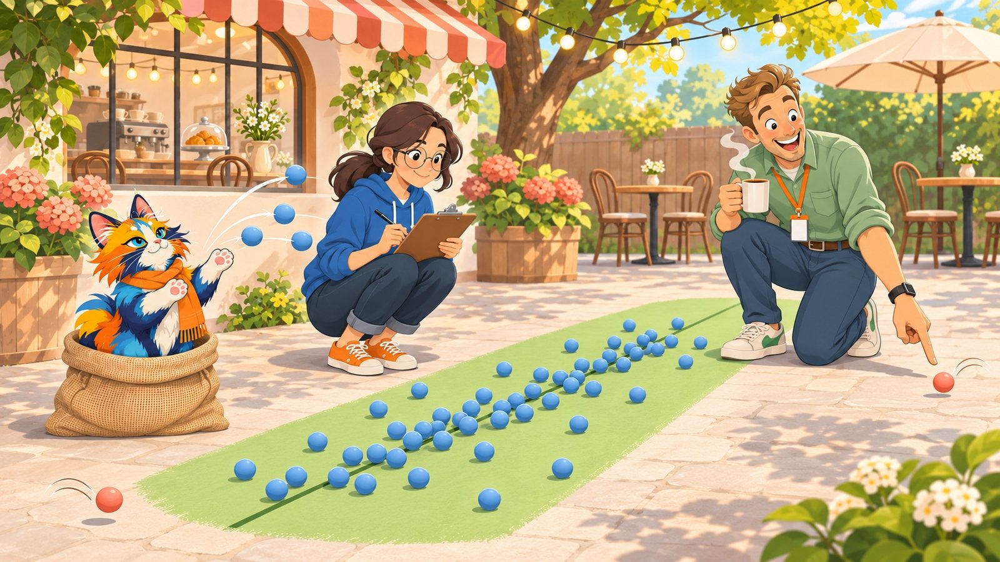

Шаг 5 из 10
Ширина колокола

В прошлом шаге средние по многим людям собрались в колокол. Теперь главный вопрос: насколько он широкий.
Ширина колокола показывает, насколько среднее шатается от раза к разу. Узкий колокол — среднее почти не меняется, ему можно верить. Широкий — сегодня одно, завтра другое. В A/B-тесте от этой ширины зависит всё: какую разницу мы заметим, а какую примем за шум.
Считаем, как и в шаге 4, заказы на человека за неделю: у 60 % ноль, у остальных один, два, иногда десять и больше. В среднем около 1 заказа.
Людей в 4 раза больше


Если в эксперименте будет в 4 раза больше людей, среднее станет в 4 раза точнее. Логично же!
Средние считаем по выборкам. Людей в каждой выборке стало в 4 раза больше. Во сколько раз сузится колокол средних?
Выбери вариант.
Колокол и число людей
Выбери, по скольку людей в каждой выборке, и насыпь 500 выборок. Каждая точка гистограммы — одно среднее. Скобка под колоколом — его ширина: на столько среднее обычно отходит от правды. Попробуй несколько размеров подряд: 25, 100, 400, 1600.
Твои замеры: пока нет
Точность дорожает быстро
Вот как ширина колокола зависит от числа людей. Линия — то, что получается всегда, точки — твои замеры с прошлой карточки.
Где почти наверняка окажется среднее

Возьмём выборки по 1000 человек. Ширина колокола тут около 0,075 заказа. Отложим от правды по две ширины в каждую сторону: получится полоса примерно от 0,85 до 1,15.
Сколько из 1000 средних попадёт в эту полосу, как думаешь?
От чего зависит ширина
Ширина колокола складывается всего из двух вещей. Открой карточки.
Ширина на глаз
Эксперимент шёл неделю. Боб продлил его ещё на три недели при том же трафике. Что стало с шириной колокола?
Людей стало в 4 раза больше: неделя превратилась в четыре. Ширина падает по корню, значит колокол вдвое уже.
Нужно, чтобы колокол стал в 10 раз уже. Во сколько раз больше людей понадобится?
Корень из 100 — это 10. Поэтому крошечные эффекты так дорого ловить: каждый следующий знак точности стоит в сто раз больше людей.
В среднем человек делает 1 заказ в неделю. Берём выборку из 400 человек, ширина колокола 0,12. Где почти наверняка окажется её среднее?
Две ширины — это 0,24. Отложи их от правды в обе стороны: от 0,76 до 1,24. Так бывает примерно в 95 случаях из 100.
Ширина решает всё
- Ширина колокола показывает, насколько среднее обычно отходит от правды.
- Больше людей — уже колокол, но по корню: ×4 людей дают вдвое уже, ×100 — в 10 раз.
- Правило двух ширин: в полосу ± 2 ширины вокруг правды попадает около 95 % средних.
- Ширина зависит только от числа людей и от того, насколько люди разные.
Теперь у того, что мы сделали руками, есть названия:
- Стандартная ошибка
- ширина колокола среднего, обычный отход среднего от правды
- Правило ± 2
- в пределах двух стандартных ошибок от правды лежит около 95 % средних

Дальше, шаг 6: в эксперименте колоколов два, у контроля и у теста. Что тогда значит «тест лучше на 2 %» и почему эффект — это вилка, а не одно число.